10 Voyage Tracks
So where did whalers actually go to find whales? They went wherever they needed to find whales. Over time people learned whaling migration patterns and knew when and where to find the whales they were hunting.
Ships’ tracks below rely on the latitude and longitude measurements noted in the logbooks. I filtered out voyages with lower-quality data (see Section 11.1 Dealing with errors, duplicates, and omissions), leaving 138 of 15,608 (about 0.9%) of the voyages fit to be plotted.
10.1 Voyages of the Charles W. Morgan
Section 9.2 in Financial returns laid out the revenue, estimated costs, and estimated profit of the 37 voyages of the Charles W. Morgan. The voyage summary data includes 16 voyages of the Charles W Morgan with log data for 15 of them. Since most of these tracks are not complete enough for plotting, below are the recorded whale encounters (sightings and strikes) without voyage tracks. See the summary table in the Appendix Section 11.6 Charles W. Morgan’s voyages for more information.
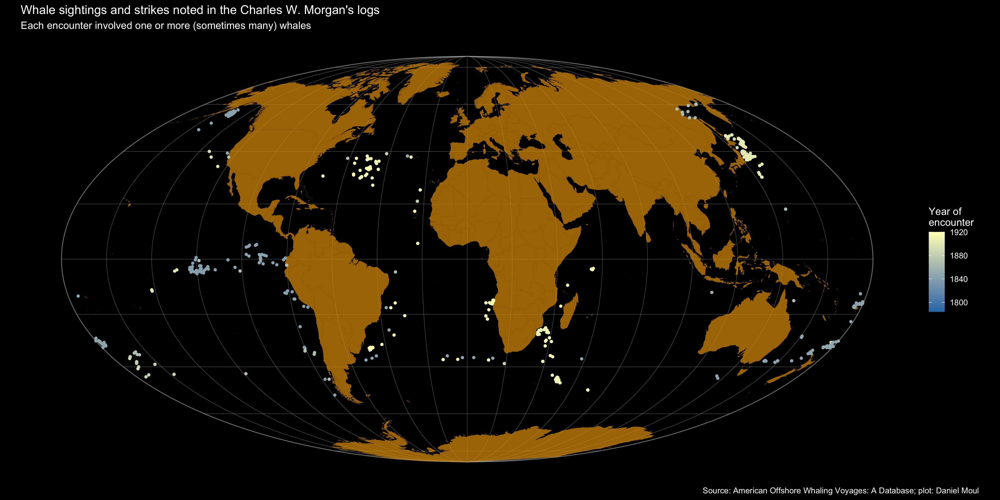
10.2 Voyages without gaps of seven days or more in observations
Below are 138 voyages of 109 vessels with tracks good for plotting.

Below is the same information in batches of five so they are easier to follow. Voyages are sorted by date of first logbook entry so changes in the pattern of voyages over the years is more visible. White dots indicate one or more strikes (harpoonings). More information can be found in the Appendix Section 11.7 All good voyage tracks.
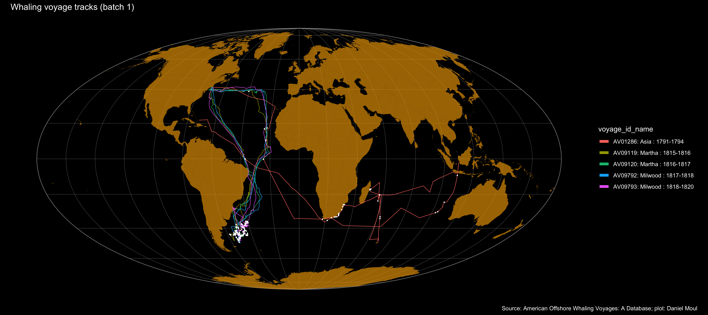
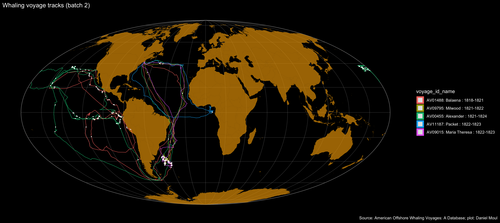
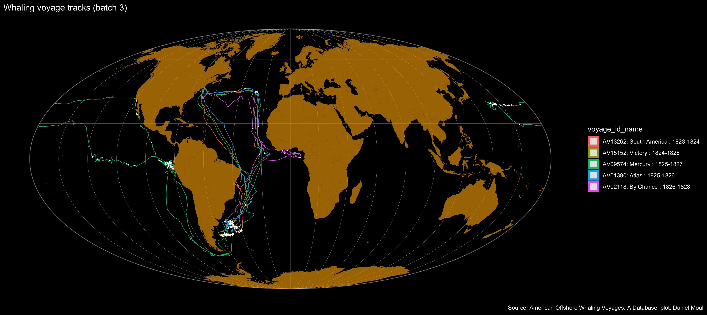
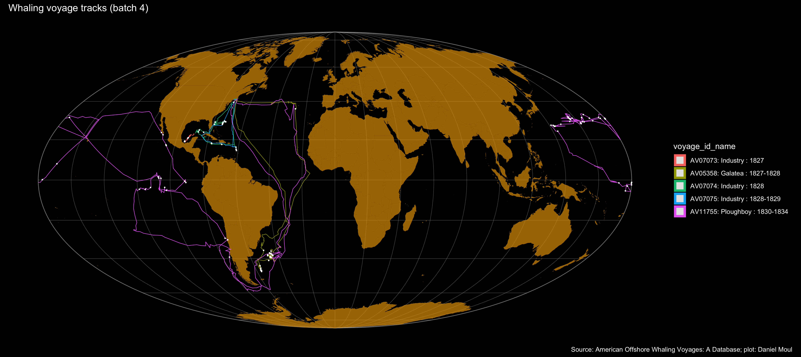
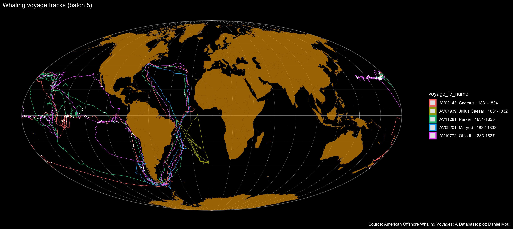
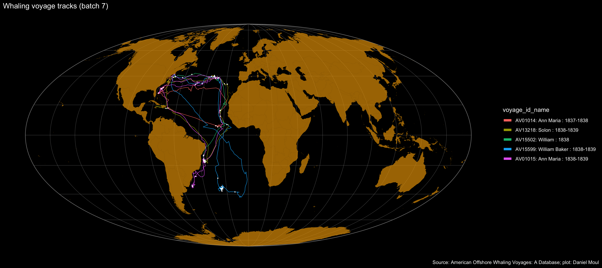
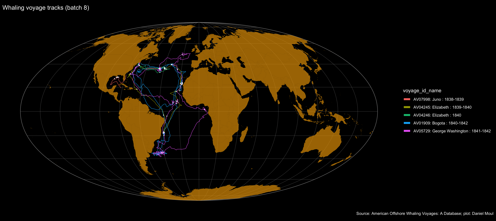
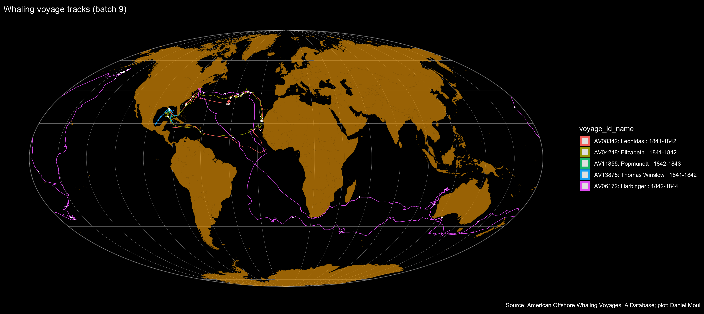
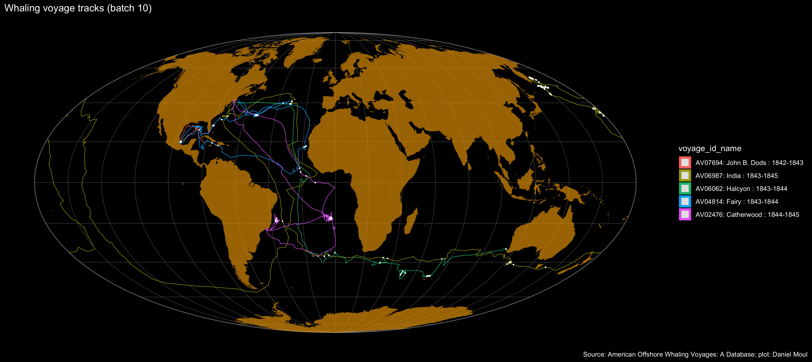
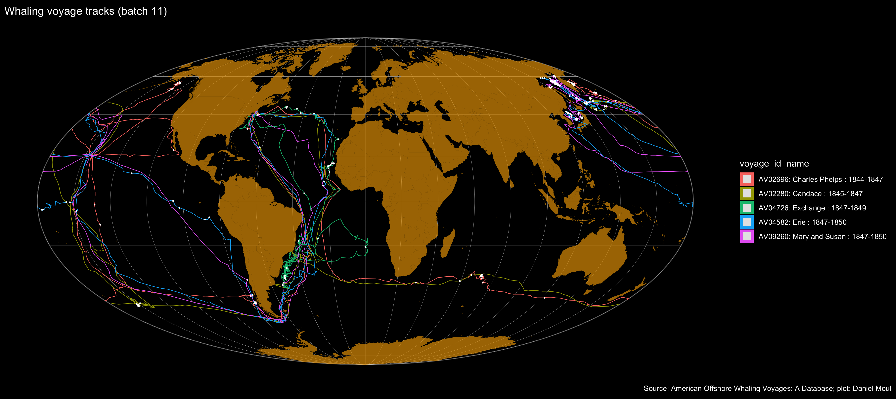
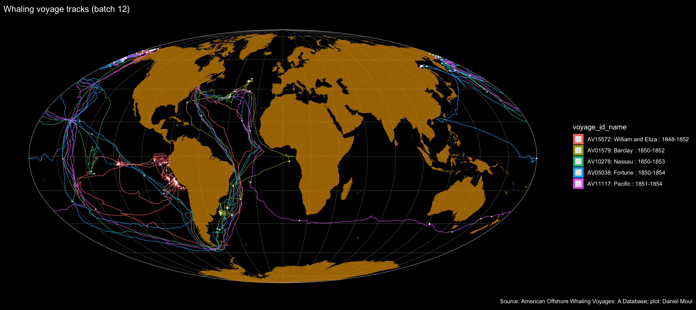
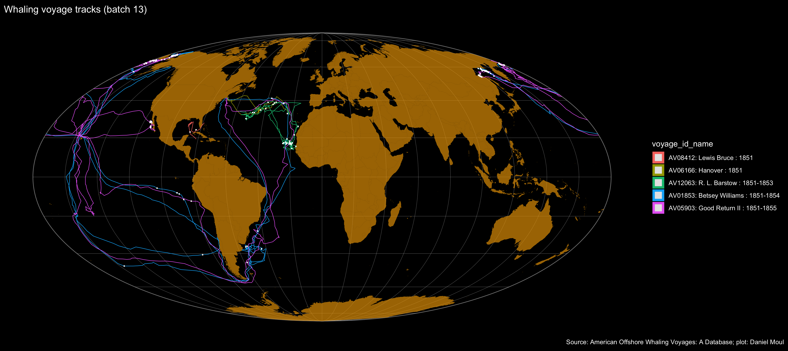
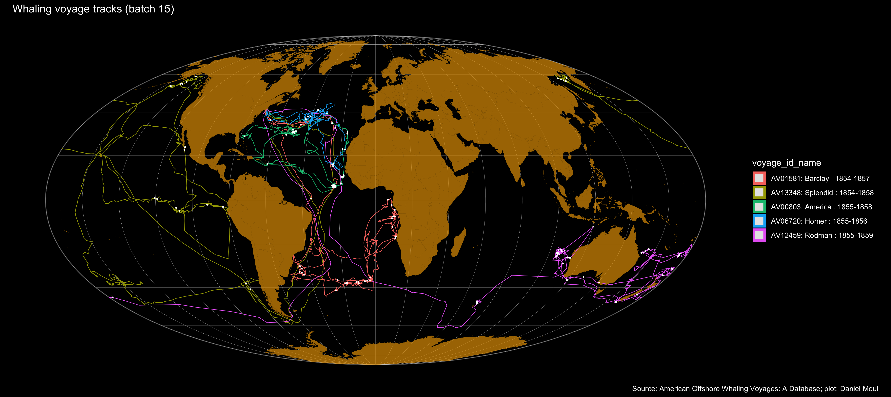
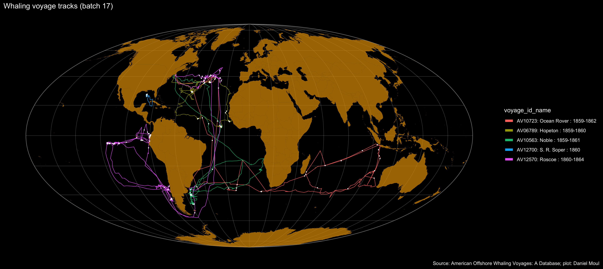
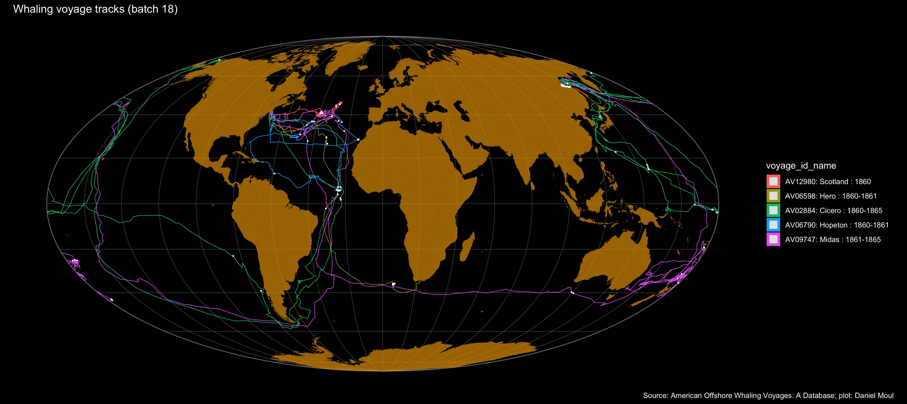
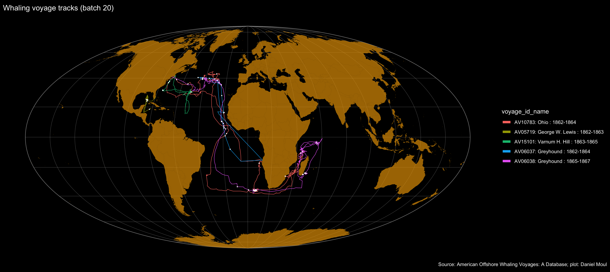
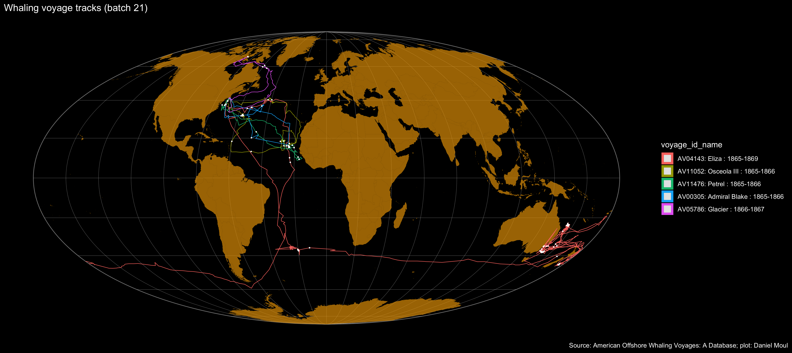
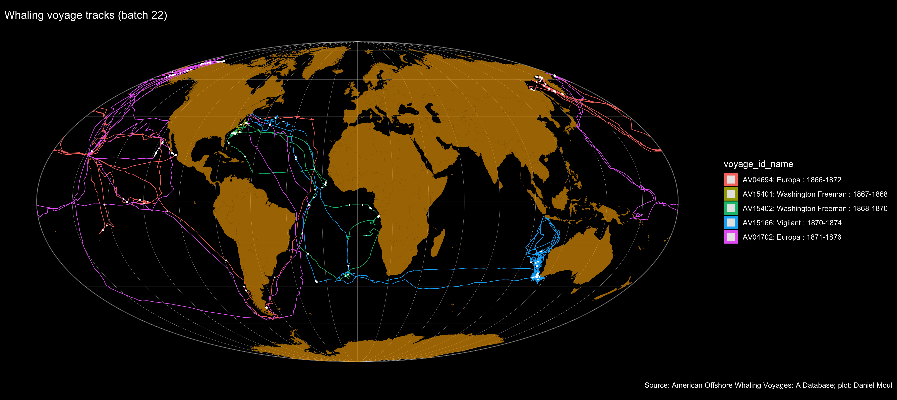
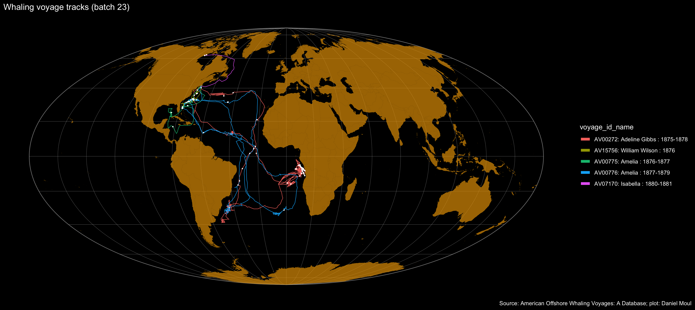

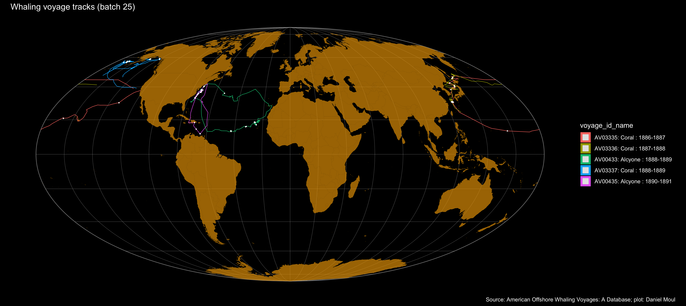
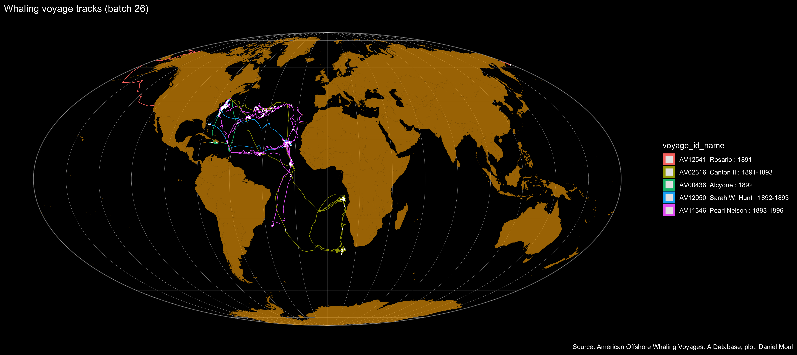
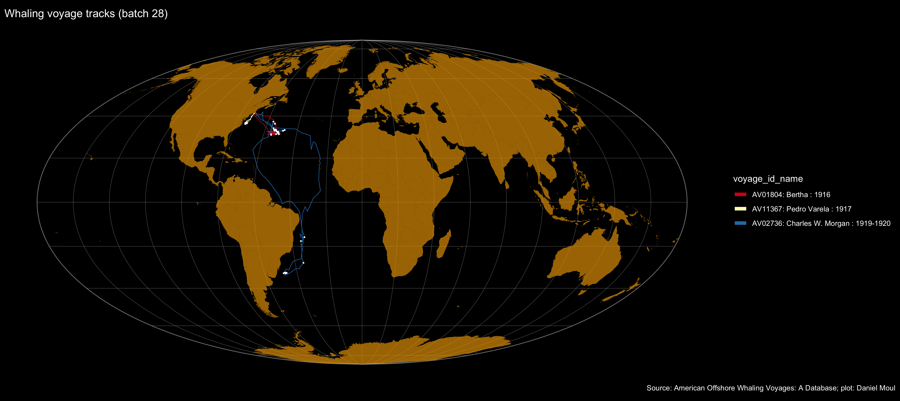